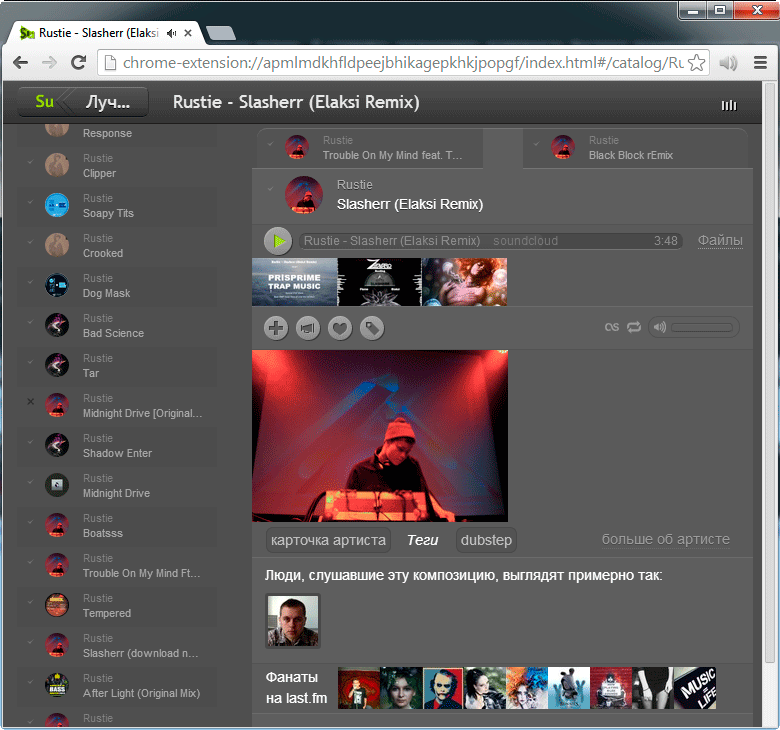

Анимация, 3 кадра. Изменяем в модели состояние track, 2 вьюхи мгновенно реагируют на изменение
С октября 2009 года я занимаюсь разработкой приложения для поиска и прослушивания музыки. Я стремлюсь организовать возможность быстрого взаимодействия пользователя с интерфейсом, и в качестве одного из средств ускорения взаимодействия использую различные способы для быстрой отрисовки страниц.
Предлагаю ознакомиться со способами, реализованными мной в приложении на системном уровне:
Принцип, согласно которому максимум визуальной части переносится в CSS, а изменение отображаемого происходит за счёт переключения классов (например, переключение класса .hidden { display:none } вместо удаления/создания нода если нужно просто скрыть элемент). В то же время использование данного принципа позволяет не перегружать браузер чрезмерным количеством DOM нодов в документе.

в этом примере для отображения полного списка у одного из нодов просто переключается класс want_more_songs
Под атомарными изменения я подразумеваю принцип, когда вместо того, чтобы полностью переделывать, заново парсить и строить новые большие части DOM структуры, мы изменяем какую-то конкретную часть уже существующего DOM. Причем изменения структуры привязаны к изменениям состояний как можно конкретней. Если должен измениться класс, - меняем через $('.target_node').addClass('active'), если текст, - то через $('.target_node').text('сделать заказ'). Это же самое касается атрибутов и других частей DOM.
Это первые оптимизации, один из первых принципов, который я использовал (в связи с чем отказался от шаблониторов, особенно в стиле underscorejs.template). Они заклчаются в том, чтобы при изменениях состояний модели не перерисовывать всю вьюху, а изменять лишь часть. Согласно им я не должен использовать .innerHTML (или jquery(...).html()), а также должен кэшировать выборки нодов (селекторов), т.е. если мне нужно изменить какую-либо часть, то я не делаю выборку каждый раз, а просто беру нужный нод из кеша.
Эти две вещи организованы у меня так: код разделён согласно MVC, при изменениях состояний модели информация об изменениях отправляется во вьюхи, во вьюхе срабатывает функция, связанная с изменяемым состоянием. Функция использует кеширование для выборок.
Например, у модели были следующие состояния:
{
artist: "The Killers",
track: null
}
мы изменили их этим кодом:
track_model.updateState('track', "When You Were Young");
состояния стали такими:
{
artist: "The Killers",
track: "When You Were Young"
}
состояние поля track изменилось, и мы отправили эти изменения из модели во вьюху.
Анимация, 3 кадра. Изменяем в модели состояние track, 2 вьюхи мгновенно реагируют на изменение
во View срабатывает функция, реагирующая на изменение какого-то конкретного состояния и производящая DOM изменения, в данном случае сработает следующий код:
'stch-track': function(new_state, old_state){
this.container
.find('.song-track-name')
.text(new_state)
.toggleClass('hidden', !new_state);
}
(обратите внимание на название метода вида 'stch-' + state_name, в данном случае 'stch-track');
так конкретные изменения привязаны к конкретным частям DOM
Теперь обратим внимание на кеширование. Если при каждом изменении делать выборку (this.container.find('.song-track-name')), то это негативно скажется на производительности, поэтому, чтобы не делать каждый раз выборку, сразу меняем например на такой код:
'stch-track': function(new_state, old_state){
if (!this.track_name_node){
this.track_name_node = this.container.find('.song-track-name');
// этот же код можно было бы вынести в инициализацию нашей вьюхи
}
this.track_name_node.text(new_state).toggleClass('hidden', !new_state);
}
(так я кешировал выборки, когда только начинал писать код, в соответствии с принципами атомарных изменений)
Позже, когда я начал делать и использовать свой шаблонизатор, для случаев, когда необходимо произвести измения в DOM в ручном режиме, я создал дирeктиву (<span pv-anchor="track_name_con" class="song-track-name"></span>), которая указывает, что нод нужно закешировать в хранилище, потому что я буду обращаться к нему вручную (вместо того, чтобы каждый раз писать императивный код this.container.find('.song-track-name')). Таким образом, я могу переписать реакцию на изменения так:
'stch-track': function(new_state, old_state){
this.tpl.ancs['track_name_con'].text(new_state).toggleClass('hidden', !new_state);
}
Такие простые изменения (когда от состояния зависит текст или класс, или какой-либо иной атрибут) обычно описываются другими директивами, а директива pv-anchor использутеся для более сложных изменений (например затрагивающих расположение или размер других нодов), для навешивания событий при сложном взаимодействии и для других случаев, где DOM меняется вручную.
Браузер старается произвести рендеринг после того, как были произведены все изменения в DOM. Однако ему придётся вычислить всё гараздо раньше, а потом ещё раз, если вы попытаетесь считать некоторые свойства. Поэтому я стремлюсь считывать DOM как можно реже, а если не получается, то кешировать (если возможно) результаты чтения.
Сейчас существуют быстродейственные и относительно удобные шаблонизаторы, например, шаблонизатор в angularjs и Facebook React. Когда я был в самом начале пути, я не знал о существовании удобных шаблонизаторов, делающих эти простые вещи (они тогда вообще были?), поэтому я и не использовал их.
Когда код в приложении эвалюционировал, разделился по принципу MVC, у меня по-прежнему не было шаблонизатора, поэтому все реакции на изменения я описывал вручную (как это описано в примере выше).
Позже я обратил внимание на шаблонизатор в быстро набирающем популярность angularjs, который также придерживался принципа атомарных изменений (и имел data binding). Но интерес для меня представлял скорее принцип, согласно которому изменения состояний привязываются к свойствам элементов. Это происходит при помощи декларирования дополнительных аттрибутов в html документе.
Я взял из angularjs код, отвечающий за парсинг выражений, и сам декларативный способ дата байндинга через атрибуты. Такой способ описания связи оставляет HTML код работающим и позволяет выполнить браузеру самую сложную часть работы (HTML парсинг), а потом многократно использовать результат (с помощью клонирования методом .cloneNode().
Пример:
<div
class="user_tag_page usual_page"
pv-class="lula_page usual_page {{!vmp_show && 'hidden'}}"
></div>
В данном примере используется директива pv-class. Согласно её значению, у элемента всегда будут классы lula_page usual_page, а также, если у модели нет состояния vmp_show, то у элемента должен быть ещё один класс - "hidden". Шаблонизатор будет перезаписывать .className автоматически при изменении состояния vmp_show, однако, если шаблонизатор не используется, то className не будет перезаписан и его значение будет таким, каким мы записали его изначально, - class="user_tag_page usual_page".
Такой способ не только удобен и даёт возможность оптимизаций парсинга, но и даёт потенциал по оптимизациям производительности, связанных с внесением изменений в DOM. Например, оптимизация производительности реализуется при изменении классов элементов. Возможно, вы знаете, что метод jQuery(node).addClass('sample-class') прежде, чем добавить класс, проверяет, есть ли такой класс у элемента, т.е. прежде, чем произвести запись, делает дополнительное чтение (по крайне мере до появления classList api). Но т.к. в шаблонизаторе мы знаем полный набор классов и набор классов, который должен быть при текущем состоянии модели (например "lula_page usual_page hidden"), мы можем сразу сделать так:
node.className = "lula_page usual_page hidden";
т.е. нам совсем не нужно было читать предыдущее значение className, потому что мы меняем его только, если состояние изменилось, и мы знаем весь список состояний, от которых он зависит, и каким конкретно должно быть значение класса.
Зная состояния моделей и сооствествующую им DOM структуру, читать этот самый DOM вообще не нужно (если только ничего не зависит от размеров каких-либо других частей).
Впрочем, конкретно с чтением классов, описанный принцип может вообще не давать прироста в производительности (по крайне мере, современный браузер должен понимать, что ему не нужно вычислять какие-либо размеры, расположения для того, чтобы предоставлять полное значение className), но это маленький бонус, получаемый мной от шаблозиратора.
Однако, в записи, связанной с выходом последней, на текущий момент, вышедшей версии jquery (1.11, 2.1, 24 января 2014) разработкичи сообщили (см. под заголовком Fewer forced layouts), что исправили лишние срабатывания layout change при изменении класса. Т.е. это имеет значение, причем достаточно серьёзное. Разработчики хрома тоже работают над этой проблемой.
Считывание размеров или расположения элементов вызывает преждевременное вычисление всех других произведённых изменений - это удачное место для оптимизаций. Для случаев, где это возможно, я использую кеширование.
Например, для установки ширины нодов, отображающих текущий прогресс воспроизведения и загрузки, я использую не процентное значение ширины, а пиксельное.
обычная ширина прогресс бара файла

ширина прогресс бара при развернутом списке файлов

ширина прогресс бара при другой ширине окна
Для вычисления необходимо знать ширину родительского элемента. Ширина родительского элемента может варьироваться от ширины экрана и полного или одиночного отображения списка найденных файлов.
В данном случае ни от каких других параметров ширина не зависит. При одинаковой ширине и режиме отображения списка ширина нода будет всегда одинаковая. Я использую состояния, которые могут влиять на ширину как часть ключа при доступе в хранилище.
this.getBoxDemension(this.getProgressWidth, 'progress_c-width', window_width, !!p_wmss);
Первый параметр метода (getProgressWidth) - это просто функция, которую метод getBoxDemension сам вызовет, если в хранилище нет значения для данного ключа.
Все остальные параметры просто складываются в строку. В данном случае p_wmss в строке станет ‘false’ или ‘true’ (отображется только один файл или весь список). В результате ключ может выглядеть например так progress_c-width-1372-false.
При изменении ширины окна или режима отображения будет вычислена новая ширина для нового ключа (если такой нет ещё в хранилище), а зависящие от этой ширины части будут автоматически перерисованы.
На самом деле, к ключу каждый раз добавляется ещё две строки - это имя позиции гнезда-слота данной вьюхи внутри родительской вьюхи (в терминологии моего фреймворка, который автоматически присвает это имя позиции вьюхам), и то же самое верно и для родительской вьюхи внутри её родительской вьюхи. Это используются для случаев, когда одна и та же вьюха используется в разных местах, в связи с чем вычисляемые размеры зависят не только от, например, ширины экрана и режима отображения списка файлов, но и от того, где используется вьюха.
Дополнительно вы можете ознакомиться с видеозаписью, где в части своего доклада об этом рассказывает сотрудник компании гугл Пол Льюис. См. также совместную статью Пола Люиса и Пола Айриша, на эту же тему. Список свойств, так или иначе влияющих на рендеринг из той статьи.
В фреймворке реализован сбор всех состояний в пакет до отправки во вьюхи для состояний модели, зависящих от иного состояния и изменяющихся при обновлении этого состояния. Но только у этой модели, а не у всего приложения.
При обновлении состояния модели все другие состояния модели, зависящие от него, будут так же автоматически обновлены, а изменения будут собраны в один большой пакет и отправлены во вьюху, чтобы рендеринг проходил в одну итерацию. Вычисления изменений будет происходить до тех пор, пока в этой модели не перестанут появляться новые изменения, т.е. отправка затянется только вычислением состояний этой модели (и ничем более). Изменения состояний, зависящих от других моделей (например, от нашей обновлённой), в этих моделях будут вычисляться только после того, как обновлённая модель отправит изменения в свои вьюхи.
Таким образом, реализовано накопление изменений состояний, не затягивающееся на чересчур долгое время.
Чтобы рендеринг происходил в одну итерацию при ручном обновлении нескольких состояний, я пользуюсь следующим методом:
.updateManyStates({
artist: 'artist_224',
title: 'radnomd title 014'
})
вместо того, чтобы выполнить два таких шага:
updateState('artist', 'artist_224')
updateState('title', 'radnomd title 014')
в будущем я пранирую помимо этого принципа использовать requestAnimationFrame для того, чтобы аккамулировать записать изменений непосредственно на стороне шаблонизатора
При изменении списков список не перерисовывается вновь.
При изменении списков части DOM, связанные с элементами списка, не создаются заново.
При изменении списков новая очерёдность DOM элементов списка устанавливается не откреплением полностью от документа, а откреплением, если необходимо, и прикреплением изменивших свою позицию (или новых) элементов в строго определенное для них место.
DOM, соответствующий элементам списка, которые нужно прикрепить, прикрепляется не по отдельности, а с помощью createDocumentFragment, если элементы идут друг за другом. Элементы прикрепляются к documentDrafment в нужном порядке, потом documentDrafment прикрепляется к документу в нужное место с помощью методов after, before или append.
Таким образом, при изменении списка в DOM происходят только самые необходимые и минимальные изменения.
список с подсвеченным элементом (глобальная переменная $0 в консоли - это выбранный и подсвеченный элемент, $1, $2, $3 - элементы, выбранные до этого)
в список было добавлено большое количество новых композиций, при этом элемент, отвечающий за презентацию композиции (список которых изменился), выбранный до этого, остался абсолютно тем же нодом.
Дополнительно вы можете прочитать перевод записи из блога Джона Резига.
При необходимости отрисовать большую структуру с вложенными друг в друга элементами (даже простые вещи чаще всего реализованы, как вложенные части), в том числе при необходимости отрисовать список, фреймворк в первой итерации отрисует вьюхи для моделей, находящихся на самом верху структуры. Внутри этой итерации будет ещё две: будет отрисована самая основа, задающая визуальные габариты, далее будут отрисованы детали (касающиеся непосредственно этой модели, реакции на изменения её состояний). В следующей итерации фреймворк будет рисовать вложенные модели, и так будет продолжаться, пока вложенность не кончится. Все итерации разделены и могут быть разряжены с помощью setTimeout, если отрисовка занимает например более 200 мс (в будущем планирую заменить на requestAnimationFrame), чтобы не блокировать интерфейс и позволить браузеру отрисовать то, что уже есть. Для пользователя интерфейс будет изменяться постепенно, т.е. он будет видеть, что происходят некоторые изменения, в отличие от более простого способа, когда после продолжительной паузы (в течение которой баузер не реагирует на нажатия и отображает одно и тоже) браузер резко меняет картинку.
Это похоже на прогрессивный jpeg или может напомнить вам игровые движки. В моменты, когда движку не хватает ресурсов, и изображение появляется сначала в плохом качестве (неотфильтрованные текстуры, малополигональные модели и т.д), а потом картинка улучшается.
Анимация, 2 кадра. Прогрессивный рендеринг: сначала гарабиты, потом детали. Словить момент, и запечатлись певрую часть удалось только в режиме отладки, отчего видно затемнение.
Получение DOM структуры для View происходит примерно следующим образом: HTML парсер самого браузера один раз разбирает HTML (выполняет самую тяжелую работу, это происходит предварительно, во время загрузки всей страницы), далее, при необходимости, результат клонируется через DOM API (.cloneNode()). Экземляры из шаблона создаются путём клонирования DOM дерева шаблона, после чего читаются и разбираются директивы, связанные с этим нодом.
Чтобы после клонирования нодов не приходилось повторно читать атрибуты для поиска директив (такие сервисные данные не копируются при клонировании нода), а так же для повторного использования объектов, которые создаются директивами (для последующего использования шаблонизатором) с целью более эффективного использования памяти и более редкого срабатывания garbadge collector, было найдено решение, которое позволяет максимально быстро копировать сервисные данные из нода-оригинала в нод-клон.
Происходит это следующим образом: шаблонная DOM структура парсится, анализируется. Всем нодам элементов с директивами устанавливается свойство pvprsd с уникальным значением соответствующее уникальному набору директив, который сохраняется в хранилище и может быть использован в будущем. После того, как всем нужным элементам установлено свойство, начиная от корня, структура раскладывается в массив. Шаблонная структура клонируется от корня, и этот экземпляр так же клонируется. Эксемпляр далее сходным образом от корня раскладывается в массив. Такое клонирование и раскладывание гарантирует, что в массивах под одними индексами будут абсолютно аналогичные ноды. После этого обычный проход по массиву копирует pvprsd из элемента первого массива в элемент массива экземпляра:
var getAll = function(node) {
var result = [];
var iteration_list = [ node ];
var i = 0;
while( iteration_list.length ){
var cur_node = iteration_list.shift();
if ( cur_node.nodeType != 1 ){
continue;
}
for ( i = 0; i < cur_node.childNodes.length; i++ ) {
iteration_list.push( cur_node.childNodes[i] );
}
result.push( cur_node );
}
return result;
};
var cloned = this.onode.cloneNode(true); var all_onodes = getAll(this.onode); var all_cnodes = getAll(cloned);